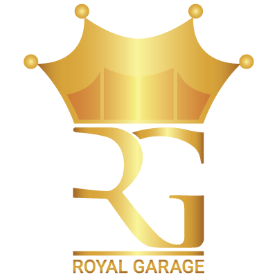

Kiváló szakértelem és barátságos kiszolgálás vár a város szívében! (Gyári úti garázssoron, a József Attila utcával szemben)
Szervizünk a megbízhatóság, szakértelem és minőség tökéletes kombinációját kínálja. Tapasztalt csapatunk gyorsan és hatékonyan oldja meg a felmerülő problémákat, legyen szó időszakos szervizről vagy egy összetettebb javításról. Büszkék vagyunk arra, hogy ügyfeleink elégedetten ajánlanak minket tovább. Bízd ránk te is nyugodt szívvel autód javítását!
Műhelyünk kimagasló tudással rendelkezik autóvillamosság terén.
A legbonyolultabbnak tűnő elektormos hibák feltárásában és javításában is szakszerű segítséget nyújtunk.
Járműdiagnosztika, motordiagnosztika, hibakód feltárás, elektormos hibák javítása, autóvillamosság tapasztalt kollégáink által.
Szolgáltatásaink közé tartozik az olajcsere, egyéb időszakos szervizek, folyadékok cseréje, klímajavítás,
futómű- és fék javítás, motorproblémák diagnosztizálása és -helyreállítása, kuplungjavítás, elektromos rendszerek hibáinak feltárása és szakszerű javítása.
A legapróbb meghibásodásoktól a legnagyobbakig mindenre megoldást kínálunk.
A rendszeres karbantartás és szakszerű javítás garantálja autód megbízható, biztonságos működését és hosszú élettartamát.
Gépjármű diagnosztika, részletes állapotfelmérés, komplett javítás tervvel.
Ha használt autó vásárlására vagy műszaki vizsgára készülsz vagy ha egy nagyobb utazás előtt állsz és szeretnél biztosra menni,
segítünk autód állapotának felmérésében.
Autód műszaki vizsgáztatását bízd ránk!
Gondoskodunk a műszaki vizsgára való felkészítéséről és annak lebonyolításáról. Minden szükséges javítást elvégzünk, hogy a jármű megfeleljen
a legszigorúbb biztonsági- és környezetvédelmi előírásoknak.
Teljeskörű gumiszerviz szolgáltatás:
beszerzés, csere, centrírozás, javítás.Szezonális gumicseréért fordulj hozzánk bizalommal, hogy autód minden időjárási körülmény között a legjobb tapadást nyújtsa!
Biztosítjuk számodra a biztonságos közlekedést minden évszakban!
Autó HI-FI rendszerek beépítése.
Javítsd autód belső terének élvezeti értékét professzionálisan beépített audio rendszerrel vagy akár teljes multimédiás megoldással.
Szakértő csapatunk saját idényeidhez igazítva végzi el a beszerelést!
8:30 - 17:00
Minden hétköznap
Bejelentkezés szükséges!
Kérjük a megadott telefonszámon érdeklődj
+36 30 9 701 344